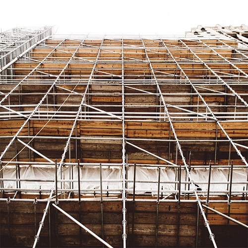

舟山隧道口东
监控中
舟山隧道口西
监控中
舟山隧道口南
监控中
舟山隧道口北
监控中
舟山隧道口中
监控中
添加监控点
添加监控点
监控位置：
监控服务地址：
监控认证信息：
关联到：
请选择
工程
构件
类型
新开窗口设置
标题：
标题颜色：
白
黑
红
标题位置：
居左
居中
返回按钮：
显示
隐藏
关闭按钮：
显示
隐藏
状态栏：
显示
隐藏
背景色：
蓝
红
绿
全屏：
否
是
参数：